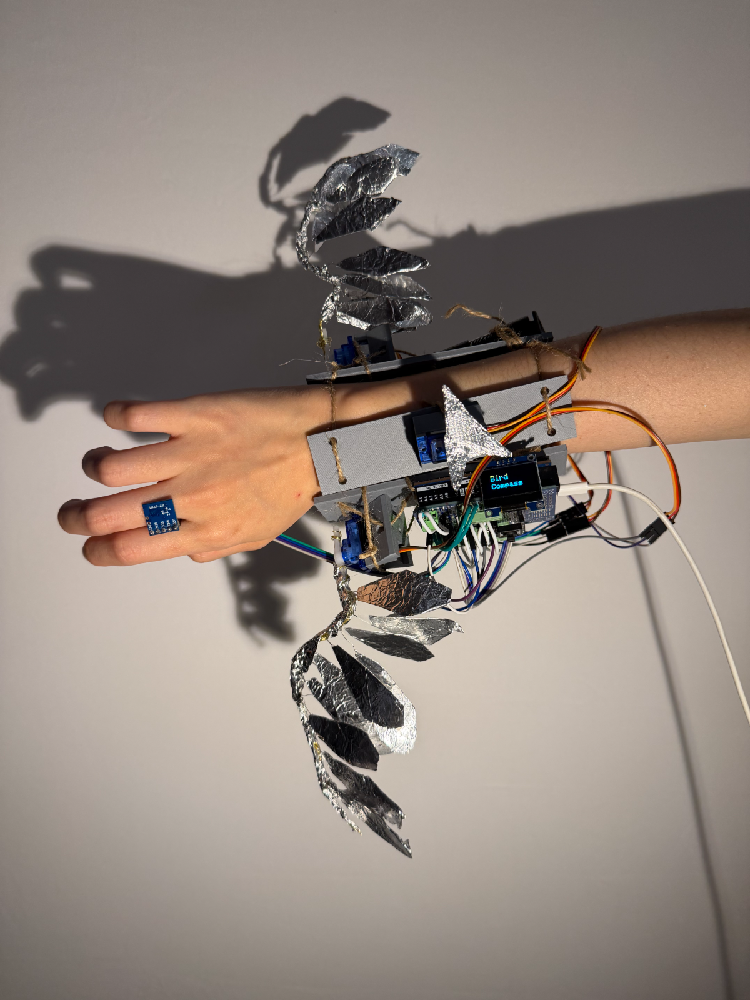
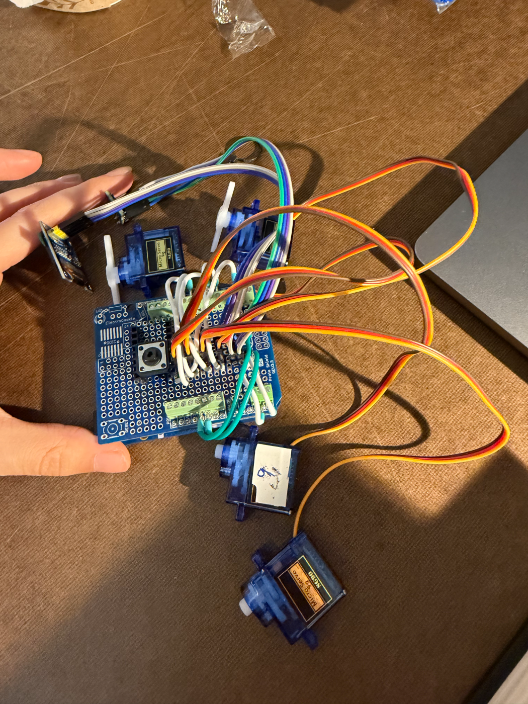
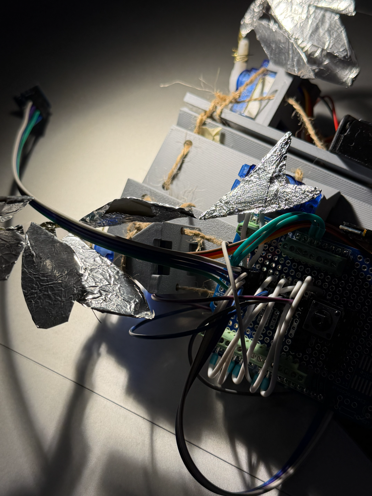
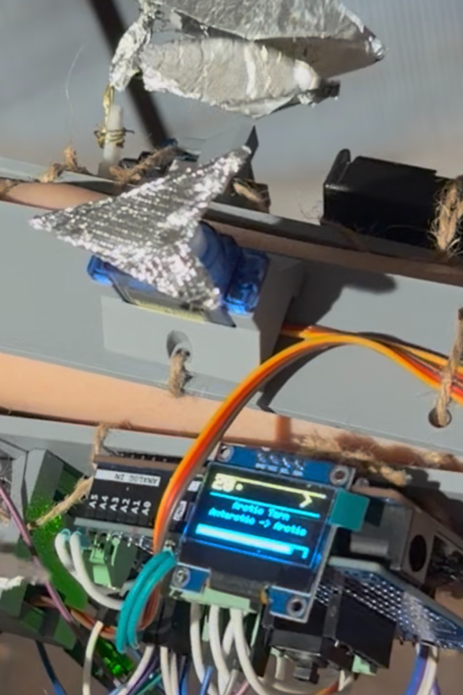
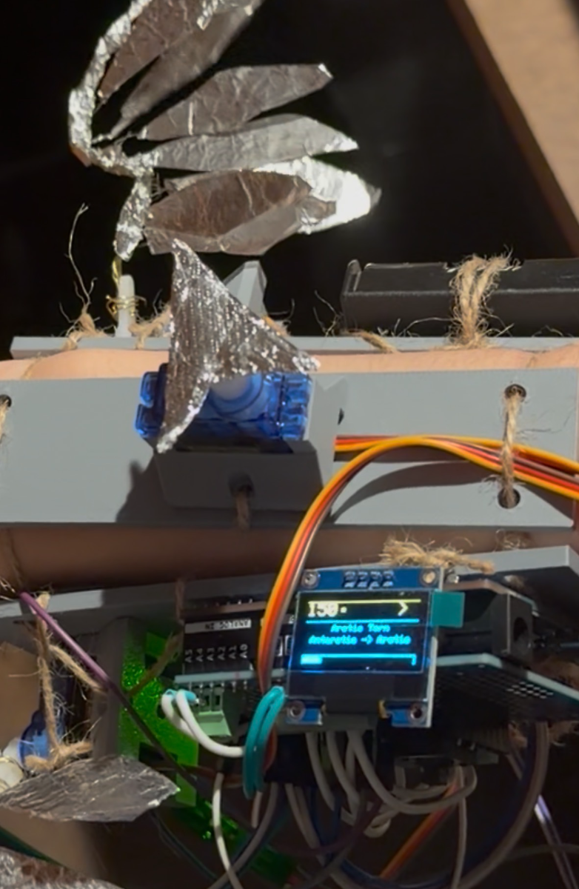

Role
Concept · fabrication · circuit · code
A wearable arm piece that borrows a bird's magnetic sense. Face along a chosen species' migration route and the wing flaps wide. Turn away and the flap gets small and slow.
Birds can feel magnetic north. We can't.
Magnetoreception is the ability to read the inclination of the Earth's magnetic field — in birds, probably through proteins in the eye. Humans don't have it. I wanted to build a version you could wear and watch: a compass on the arm, with a wing as its output.



Planned: fold, expand, and vertical motion. The servos lacked the torque, and the linkage to coordinate three axes was outgrowing the rest of the build.
Cut to vertical flapping, and spent the recovered time tuning range, speed, and easing until it read as flight.

